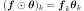
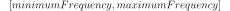

CauchyModel¶
(Source code, png, hires.png, pdf)
{kind=link}
{kind=link}
-
class
CauchyModel(*args)¶ Cauchy spectral model.
Refer to Parametric spectral density functions.
- Available constructors:
- CauchyModel(theta, sigma)
Parameters: - theta : sequence of float
Scale coefficients
 of the spectral density function.
Vector of size n
of the spectral density function.
Vector of size n- sigma : sequence of float
Amplitude coefficients
 of the spectral density function.
Vector of size p
of the spectral density function.
Vector of size p
Notes
The spectral density function of input dimension n and output dimension p writes:
Examples
>>> import openturns as ot >>> spectralModel = ot.CauchyModel([3.0, 2.0], [2.0]) >>> f = 0.3 >>> print(spectralModel(f)) [[ (0.191364,0) ]] >>> f = 10 >>> print(spectralModel(f)) [[ (1.71084e-07,0) ]]
Attributes: thisownThe membership flag
Methods
__call__(frequency)Evaluate the spectral density function for a specific frequency. computeStandardRepresentative(*args)Compute the standard representant of the spectral density function. draw(*args)Draw a specific component of the spectral density function. getAmplitude()Get the amplitude parameter of the spectral density function. getClassName()Accessor to the object’s name. getId()Accessor to the object’s id. getInputDimension()Get the input dimension of the spectral density function. getName()Accessor to the object’s name. getOutputCorrelation()Get the spatial correlation matrix of the spectral density function. getOutputDimension()Get the dimension of the SpectralModel. getScale()Get the scale parameter of the spectral density function. getShadowedId()Accessor to the object’s shadowed id. getVisibility()Accessor to the object’s visibility state. hasName()Test if the object is named. hasVisibleName()Test if the object has a distinguishable name. setAmplitude(amplitude)Set the amplitude parameter of the spectral density function. setName(name)Accessor to the object’s name. setScale(scale)Set the scale parameter of the spectral density function. setShadowedId(id)Accessor to the object’s shadowed id. setVisibility(visible)Accessor to the object’s visibility state. -
__init__(*args)¶ Initialize self. See help(type(self)) for accurate signature.
-
computeStandardRepresentative(*args)¶ Compute the standard representant of the spectral density function.
Parameters: - tau : float
Frequency value.
Returns: - rho : Complex
Standard representant factor of the spectral density function.
Notes
Using definitions in
SpectralModel: the standard representative function writes:where 
-
draw(*args)¶ Draw a specific component of the spectral density function.
Parameters: - rowIndex : int,

The row index of the component to draw. Default value is 0.
- columnIndex: int, :math:`0 leq columnIndex < dimension`
The column index of the component to draw. Default value is 0.
- minimumFrequency : float
The lower bound of the frequency range over which the model is plotted. Default value is SpectralModel-DefaultMinimumFrequency in
ResourceMap.- maximumFrequency : float
The upper bound of the frequency range over which the model is plotted. Default value is SpectralModel-DefaultMaximumFrequency in
ResourceMap.- frequencyNumber : int,

The discretization of the frequency range  over which the model is plotted. Default value is SpectralModel-DefaultFrequencyNumber in class:~openturns.ResourceMap.
- module : bool
Flag to tell if module has to be drawn (True) or if it is the argument to be drawn (False). Default value is True.
Returns: - graph : Graph
Graphic of the specified component
- rowIndex : int,
-
getAmplitude()¶ Get the amplitude parameter of the spectral density function.
Returns: - amplitude :
Point The used amplitude parameter.
- amplitude :
-
getClassName()¶ Accessor to the object’s name.
Returns: - class_name : str
The object class name (object.__class__.__name__).
-
getId()¶ Accessor to the object’s id.
Returns: - id : int
Internal unique identifier.
-
getInputDimension()¶ Get the input dimension of the spectral density function.
Returns: - inputDimension : int
SpatialDimension of the SpectralModel.
-
getName()¶ Accessor to the object’s name.
Returns: - name : str
The name of the object.
-
getOutputCorrelation()¶ Get the spatial correlation matrix of the spectral density function.
Returns: - spatialCorrelation :
CorrelationMatrix Correlation matrix
![\mat{R} \in \mathcal{M}_{dimension \times dimension}([-1, 1])](../../_images/math/4f258f61bed372e23d297c353c4ece0866d557a3.svg) .
.
- spatialCorrelation :
-
getOutputDimension()¶ Get the dimension of the SpectralModel.
Returns: - dimension : int
Dimension of the SpectralModel.
-
getScale()¶ Get the scale parameter of the spectral density function.
Returns: - scale :
Point The used scale parameter.
- scale :
-
getShadowedId()¶ Accessor to the object’s shadowed id.
Returns: - id : int
Internal unique identifier.
-
getVisibility()¶ Accessor to the object’s visibility state.
Returns: - visible : bool
Visibility flag.
-
hasName()¶ Test if the object is named.
Returns: - hasName : bool
True if the name is not empty.
-
hasVisibleName()¶ Test if the object has a distinguishable name.
Returns: - hasVisibleName : bool
True if the name is not empty and not the default one.
-
setAmplitude(amplitude)¶ Set the amplitude parameter of the spectral density function.
Parameters: - amplitude :
Point The amplitude parameter to be used in the spectral density function.
- amplitude :
-
setName(name)¶ Accessor to the object’s name.
Parameters: - name : str
The name of the object.
-
setScale(scale)¶ Set the scale parameter of the spectral density function.
Parameters: - scale :
Point The scale parameter to be used in the spectral density function. It should be of size dimension.
- scale :
-
setShadowedId(id)¶ Accessor to the object’s shadowed id.
Parameters: - id : int
Internal unique identifier.
-
setVisibility(visible)¶ Accessor to the object’s visibility state.
Parameters: - visible : bool
Visibility flag.
-
thisown¶ The membership flag